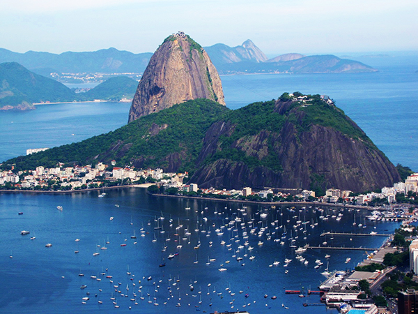
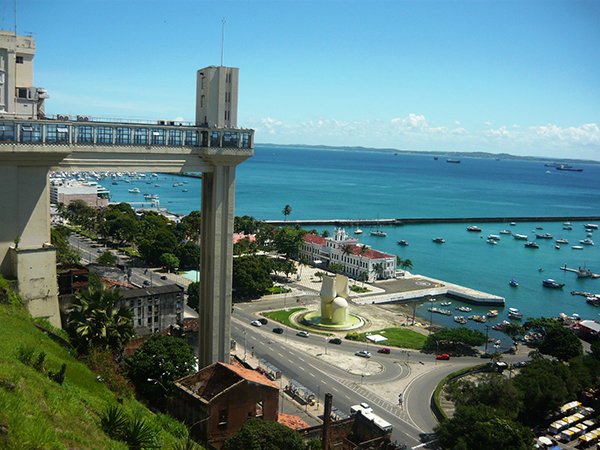
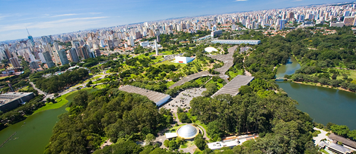
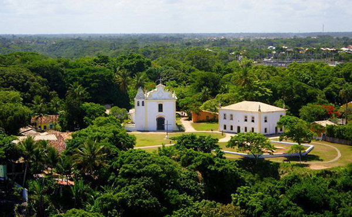

2
2 3
3 5
5 6
6Rio de Janeiro
Cristo Redentor
Principal ponto turístico do Rio de Janeiro, o Cristo Redentor está localiza,do há 710 metros de altitude. O local possui uma vista panorâmica incrível da cidade e se destaca em vários pontos da cidade. O Cristo abençoa o céu e o povo carioca desde 13 de agosto de 1931 e, ao contrário do que muitos dizem, não foi um presente dos franceses para os brasileiros. Na verdade, uma campanha de arrecadação que durou 10 anos, foi responsável por angariar fundos para a mega obra.

Pão de Açúcar
Com 395 metros de altura, o Pão de Açúcar é outro importante ponto turístico do Rio de Janeiro. O local conta com um bondinho que leva os visitantes a terem uma incrível vista aérea da cidade e de toda as suas belezas naturais.
Salvador
Elevador Lacerda
Entre os pontos turísticos do Brasil podemos destacar também o Elevador Lacerda, em Salvador. O monumento recebeu esse nome em homenagem a seu idealizador, Augusto Frederico de Lacerda. Além de um belo ponto turístico, ele é importante, pois liga a Cidade Baixa à Cidade Alta.
São Paulo
Museu de Arte de São Paulo
Considerado o mais importante museu de arte ocidental de toda a América Latina, o MASP é um dos pontos turísticos do Brasil mais visitados, sendo quase uma parada obrigatória para os que vão a terra da garoa. O local possui um incrível acervo com diversas obras de artistas consagrados.

Parque do Ibirapuera
O Ibirapuera é o que os paulistas chamam de o Pulmão da cidade de São Paulo e é um dos lugares mais frequentados pelos moradores! Com 1,584 km² de extensão e 3 lagos artificiais, o parque do Ibirapuera é o lugar perfeito para passar o dia, seja fazendo exercícios, um picnic, visitando museus e exposições ou apenas descansando a sombra de uma árvore!
Porto Seguro
Centro Histórico
Entre os pontos turísticos do Brasil que não são monumentos, o Centro Histórico de Porto Seguro é um dos mais procurado por turistas. O lugar conta com muitas construções históricas que levam os visitantes a um pedaço do passado brasileiro. Durante a noite, essas construções ficam ainda mais impressionantes, pois recebem uma iluminação toda especial.
Foz do Iguaçu
Parque Nacional do Iguaçu
Em Foz do Iguaçu, fica localizado um dos mais belos pontos turísticos do Brasil, o Parque Nacional do Iguaçu foi tombado pela UNESCO como Patrimônio Natural da Humanidade. Dentre as atrações do parque, estão uma vasta e preservada floresta. Além das incríveis Cataratas do Iguaçu que encantam qualquer turista com suas quedas d’água.